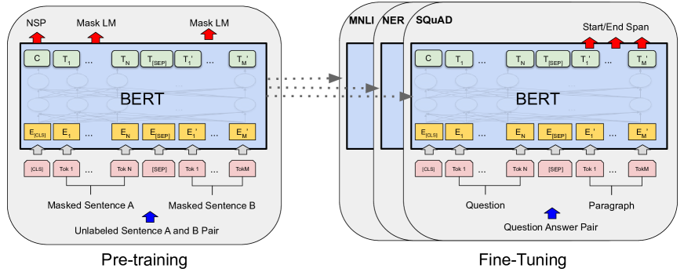

预训练目标
同样一堆语料，你可以让模型「接着往下写」，也可以挖空让它「填回去」。选哪一种，决定了模型学到什么、每份数据能榨出多少梯度信号，也在很大程度上决定了它未来是个生成器还是个理解器。这一页回答的问题只有一个：模型在预训练时到底在学什么。
预训练目标就是一套把无标注文本改造成有监督样本的规则。同一段原始文本，用不同规则改造，就得到不同的「自监督习题」：CLM 是遮住右边让你续写，MLM 是随机挖几个字让你填空，去噪目标是挖掉整个短语让你重写。习题类型不同，学到的能力和每份数据的产出效率也就不同。
一段连续文本"] --> C["CLM
遮住右侧 预测下一个 token"] D --> M["MLM
随机挖空 双向还原"] D --> S["去噪目标
挖掉连续片段 生成式重建"] C --> R1["每个位置都产生监督信号
天然适配生成"] M --> R2["仅被掩位置产生信号
表征强 生成弱"] S --> R3["片段级信号
Encoder-Decoder 友好"] C --> T["MTP
一次预测未来多步"] T --> R4["信号密度进一步提高
并为推测解码铺路"] style C fill:#e6f1fb,stroke:#185fa5 style T fill:#e6f1fb,stroke:#185fa5
训练信号密度：被低估的那把尺子
大多数教材讲 CLM 与 MLM 的差别，只说「单向 vs 双向」。这个说法没错，但它解释不了一个更要紧的事实：为什么 2020 年之后，做大规模基座模型的团队几乎清一色转向了 CLM。
真正的分水岭在训练信号密度——一条长度为 $T$ 的序列，前向传播一次，能产生多少个用于反向传播的预测目标。
- CLM：因果掩码保证了第 $t$ 个位置只能看到 $t$ 之前的内容，所以每个位置都可以同时充当「输入」和「标签」。一条长为 $T$ 的序列产生 $T$ 个预测目标，信号密度 100%。
- MLM：BERT 的做法是随机挑选约 15% 的 token 掩掉，只在这些位置计算损失。剩下 85% 的位置只贡献上下文，不产生梯度信号。同样一条序列、同样一次前向的算力，产出的监督信号只有 CLM 的约六分之一。
把这件事换算成具体数字会更有冲击力。取一条常见的 4096 长度训练序列，看看不同目标各能产出多少个「参与反向传播的预测」：
| 目标 | 一条 4096 序列产生的预测目标数 | 相对 CLM 的信号效率 | 为什么是这个数 |
|---|---|---|---|
| CLM | 4095 | 100%（基准） | 标签右移一位，除最后一个位置外每个位置都有标签 |
| MLM（掩码率 15%） | 约 614 | 约 15% | 只有被选中的 15% 位置进入损失求和 |
| T5 span 去噪（腐蚀率 15%） | 解码器侧约 614 + 哨兵符 | 约 15% 且需多跑一个解码器 | 只重建被挖掉的片段，编码器侧完全不算损失 |
| MTP（$D=4$） | 约 16380 | 约 400%（但远端头信噪比低） | 每个位置同时对 $t{+}1$ 到 $t{+}4$ 出题 |
上表按定义直接推算，用于建立数量级直觉；实际实现中因 packing、特殊符号、动态掩码等细节会有出入。
为什么 MLM 不干脆把掩码比例提到 50%、80%？因为掩得越多，剩下的上下文就越残缺，任务从「根据充分语境推断」退化成「瞎猜」，学到的表征质量反而下降。掩码率是一个卡在信号密度与上下文完整性之间的权衡，而 CLM 用因果结构巧妙地绕开了这个权衡：它不需要破坏任何输入，就能让每个位置都有标签。
| 掩码率 | 信号密度 | 剩余上下文 | 任务性质的变化 |
|---|---|---|---|
| 5% | 很低 | 几乎完整 | 太容易，模型靠局部搭配就能填对，梯度信息量小 |
| 15%（BERT 默认） | 低 | 充分 | 经验上的甜点区：既需要理解语境，上下文又没被破坏 |
| 40% | 中 | 开始残缺 | 部分位置已无法从语境推断，标签噪声上升 |
| 80%+ | 高 | 严重残缺 | 退化为「无条件生成」，训练目标本身失去意义 |
这条性质叠加 Scaling Laws 的视角就很有杀伤力：在给定算力预算下，谁能把每 FLOP 换成更多有效梯度信号，谁就能在同样的曲线上跑得更远。这是 CLM 成为基座默认目标的核心经济学原因，而不仅仅是「生成任务需要单向」。
一次训练 step 到底发生了什么
公式看起来很抽象，但落到代码里，一次预训练 step 只有六个动作。把它们串起来看，很多「论文不写、代码里全是」的细节就藏在环节之间：
其中打包（packing）是新手最容易忽略的一步。语料里的文档长短不一：一条微博几十个 token，一篇论文几万个 token。如果一篇文档占一条样本，短文档会被 padding 塞满，算力大量浪费在填充符上。所以实际做法是把多篇文档首尾相连，再按固定长度切开：
EOS = tokenizer.eos_token_id
SEQ_LEN = 4096
def pack_documents(doc_token_lists, seq_len=SEQ_LEN):
"""把变长文档首尾相连，切成定长样本；同时记录每个位置属于第几篇文档"""
buf_ids, buf_doc = [], []
doc_counter = 0
for tokens in doc_token_lists:
buf_ids.extend(tokens + [EOS]) # 用 EOS 标记文档边界
buf_doc.extend([doc_counter] * (len(tokens) + 1))
doc_counter += 1
while len(buf_ids) >= seq_len:
yield buf_ids[:seq_len], buf_doc[:seq_len]
buf_ids, buf_doc = buf_ids[seq_len:], buf_doc[seq_len:]打包把 GPU 利用率拉满了，却引入一个新问题：一条 4096 的样本里可能塞了五六篇毫不相干的文档，第二篇的开头会「注意」到第一篇的结尾。要不要切断这种跨文档注意力，是一个必须显式做出的决策，下面的深入块里展开讲。
CLM：因果语言建模
CLM（Causal Language Modeling，也叫自回归语言建模）的目标函数就是序列的负对数似然：
实现上只需要两件事：一个因果掩码（上三角置为 $-\infty$，让位置 $t$ 看不到未来），以及一次标签右移（labels 就是 input_ids 往左错一位）。整条序列的所有位置在一次前向里并行算完，这正是 注意力机制 相比 RNN 的关键红利。
# CLM 的全部秘密：labels 就是右移一位的 input_ids
logits = model(input_ids) # (B, T, V)
loss = F.cross_entropy(
logits[:, :-1, :].reshape(-1, V), # 预测第 1..T-1 个位置
input_ids[:, 1:].reshape(-1), # 标签是第 2..T 个 token
)CLM 的另一个隐性优势是训练与推理形态完全一致：训练时学的是「给定前缀预测下一个」，推理时做的也是「给定前缀预测下一个」。MLM 则存在明显的落差——训练时输入里有 [MASK] 这个特殊符号，而下游任务的真实文本里根本不会出现它，这种预训练-微调不一致是 BERT 系列一直要打补丁的问题。
读懂 loss 的数值
训练时你盯着的那个 loss 到底意味着什么？CLM 的交叉熵损失和困惑度（perplexity）之间是简单的指数关系 $\text{PPL} = e^{\mathcal{L}}$，而困惑度可以直观解释为「模型在每个位置平均在多少个候选之间犹豫」：
| 交叉熵 loss | 对应困惑度 | 直观含义 | 大致对应的阶段 |
|---|---|---|---|
| 约 10.4 | 约 33000 | 完全随机猜，相当于在整个词表上均匀分布 | 参数刚初始化，第 0 步 |
| 约 6.0 | 约 403 | 学会了词频先验，知道「的」比「饕」常见 | 训练最初几百步 |
| 约 3.0 | 约 20 | 掌握基本语法搭配 | 小模型收敛区 |
| 约 2.0 | 约 7.4 | 能利用较长上下文，续写基本通顺 | 常见基座模型的量级 |
| 约 1.5 | 约 4.5 | 接近高质量文本的信息熵下界 | 大模型充分训练后 |
困惑度由 $e^{\mathcal{L}}$ 直接算得；具体 loss 数值高度依赖分词器与语料，跨模型比较 loss 是没有意义的。
MLM：掩码语言建模
MLM 让模型看到完整的双向上下文，只把其中一部分位置挖掉去还原。先别急着看公式——我们看一眼提出 MLM 的那篇论文（BERT）里的原图，把「预训练到微调」的整体格局建立起来，再回来看损失函数怎么定义。

这张图是理解「预训练目标」最佳的第一手材料，新手读它抓三个块：① 左半张是预训练（Pre-training），输入是无标注的句子对——上面的句子被随机挖掉一些 token 变成 [MASK]，让模型预测它们（这就是 MLM）；下面的句子还要判断「这是不是上一句的下一句」，叫下一句预测（NSP）。两个任务共享同一套模型权重，同时被优化。② 中间的三个框（Token Embeddings + Segment Embeddings + Position Embeddings）是模型的输入表示：一个 token 被编码成「词向量 + 句号向量 + 位置向量」三部分相加，对应你之前在 嵌入与表示 里学的静态嵌入知识。③ 右半张是微调（Fine-tuning），把预训练好的权重搬到一个具体任务上——这里画了句子对分类、问答、单句分类三个例子，任务的输入结构变了，但底下的 Transformer 块和参数是同一套，只是用少量任务标注数据再训几步。
这张图还回答了一个新手常见困惑：为什么 MLM 要分「掩码、随机词、原词」三档（80/10/10）？因为预训练时的输入分布必须尽量贴近微调时的真实输入。微调阶段句子里没有 [MASK] 这个符号，如果训练时 100% 都把它放进去，模型会形成「看见 mask 才预测」的依赖，迁移到真实文本就失灵。所以 BERT 把被选中的 15% 位置再做一次划分：80% 换成真的 [MASK]（教模型用双向语境还原），10% 换成随机词（教它容忍输入噪声、学会纠错），10% 保持原词（教它连没被破坏的位置也要产出有用表征）。这个设计的本质，就是本页贯穿始终的那句话：目标函数在「训练-推理一致性」上花的心思，往往比公式本身更重要。
MLM 的损失函数
MLM 的数学形式如下，注意求和号只跑被掩位置：
其中 $\mathcal{M}$ 是被掩位置的集合，$x_{\setminus \mathcal{M}}$ 表示未被掩的全部上下文。注意求和号只跑被掩位置——这就是信号密度只有约 15% 的来源。
手算：一条样本里到底有多少个「有效标签」
把前面「信号密度」的概念落到一笔具体账上，最能建立肌肉记忆。假设一条训练序列长度 $T=128$ 个 token：
- CLM：标签右移一位，除最后一个位置外每个位置都是标签，有效标签数 = $128 - 1 = 127$。
- MLM（掩码率 15%）：先随机选 $128 \times 15\% \approx 19$ 个位置进入「被选中」集合；但这 19 个位置里只有 80% 真的换成
[MASK]，另外 10% 换随机词、10% 保持原词——三者都要预测，所以参与损失求和的位置仍是约 19 个。有效标签数 = 19，约为 CLM 的 15%。
这个对比的直觉意义很直接：同样一次前向传播（同样的算力和显存），CLM 拿到 127 个梯度信号，MLM 只拿到约 19 个。剩下那 108 个位置的信息不是没用——它们作为上下文帮模型推断被掩的词——但它们在「参与反向传播的监督信号」这个维度上确实被浪费了。这就是为什么在算力预算固定的前提下，追求信号密度的团队会倾向于 CLM 或 ELECTRA 这类「每位置都出题」的目标。
[MASK] 的只有 $15\% \times 80\% = 12\%$。写代码时如果没分清这两层，统计出来的「实际掩码占比」会和你以为的差一大截。
为了缓解「训练时见得到 [MASK]、推理时见不到」的落差，BERT 对被选中的 15% 位置又做了一次三分：
| 处理方式 | 占被选中位置的比例 | 输入看起来像什么 | 为什么要这么做 |
|---|---|---|---|
替换为 [MASK] | 80% | 今天天气 [MASK] 好 | 主任务：从双向语境还原被遮住的词 |
| 替换为随机词 | 10% | 今天天气 螺丝刀 好 | 逼模型对「输入本身可能是错的」保持警惕，学会纠错 |
| 保持原词不变 | 10% | 今天天气 真 好 | 让模型对未被掩的位置也保持有意义的表征，缩小训练-推理差距 |
MLM 换来的是真正的双向表征。判断一个词的含义时，右边的上下文常常比左边更关键：「苹果发布了新款手机」与「苹果很甜」，决定「苹果」语义的信息在它右侧。CLM 在编码「苹果」时看不到右边，只能靠后续位置去补救。所以在句向量、检索召回、序列标注、文本分类这类理解型任务上，同等规模下 MLM 训出的编码器至今仍有优势，现代检索系统的 嵌入模型 里 MLM 路线依然活跃。
去噪目标：从填词到重写片段
MLM 挖的是单个 token，模型往往能靠局部搭配蒙对（「北京是中国的首[MASK]」几乎不需要理解）。T5 提出的 span corruption 把这个任务加难：一次挖掉连续的一小段，用一个哨兵标记（sentinel token）占位，让解码器把整段内容按顺序生成回来。T5 的默认配置是腐蚀率 15%、被挖片段的平均长度为 3 个 token。
| 阶段 | 内容 |
|---|---|
| 原文 | 注意力机制 让每个位置 直接看到 序列里所有其他位置 |
| 编码器输入 | 注意力机制 <X> 直接看到 <Y> 位置 |
| 解码器目标 | <X> 让每个位置 <Y> 序列里所有其他 <Z> |
这样一改，任务性质发生了三个变化：被挖掉的是有语义完整性的片段，蒙不过去；模型必须生成变长的输出，而不是在固定位置做分类；同时它还保留了编码器侧的双向视野。T5 用这个目标把「所有 NLP 任务都变成文本到文本」这套范式跑通了，去噪目标也因此成为 Encoder-Decoder 架构的标配。
顺着「加什么噪声」这个旋钮往下拧，还能得到一整族变体。BART 系统地实验了多种加噪方式——随机掩码、删除 token、打乱句子顺序、旋转文档起点、片段填充——发现「片段填充 + 句子打乱」的组合在生成任务上最好。UL2 更进一步，把不同的去噪配置（短片段低腐蚀率、长片段高腐蚀率、极端的前缀续写）混在一起训，称为 mixture-of-denoisers，试图用一个模型同时拿到理解和生成两头的好处。
去噪思路还有一个更激进的变体：如果不是挖掉 15%，而是把整句都加噪成掩码，再让模型分多步、并行地把所有位置一起还原，会发生什么？那就不再是自回归模型，而是掩码扩散语言模型——它把「去噪」从一次性的填空推广成一个多步迭代过程，从而摆脱了逐 token 串行生成的限制。这是从预训练目标这个岔路口分出去的另一条完整路线。
MTP：一次预测多步
CLM 的信号密度已经是 100%，还能再高吗？MTP（Multi-Token Prediction，多 token 预测） 的回答是：可以，让每个位置不止预测下一个 token，而是同时预测未来 $D$ 个：
典型实现是在主干后面挂上若干个轻量预测头（每个头对应一个未来偏移量 $k$），主干共享，头各自算损失。代码骨架非常短：
class MTPLoss(nn.Module):
"""在共享主干之上挂 D 个预测头，每个头预测未来第 k 个 token"""
def __init__(self, hidden, vocab, depth=4, weights=None):
super().__init__()
self.heads = nn.ModuleList([nn.Linear(hidden, vocab) for _ in range(depth)])
# 越远的头越不可靠，通常给递减权重
self.weights = weights or [1.0, 0.5, 0.25, 0.125][:depth]
def forward(self, h, input_ids):
# h: (B, T, hidden) 主干最后一层输出
total = 0.0
for k, head in enumerate(self.heads, start=1):
logits = head(h[:, :-k, :]) # 位置 t 预测 t+k
target = input_ids[:, k:] # 标签左移 k 位
total = total + self.weights[k - 1] * F.cross_entropy(
logits.reshape(-1, logits.size(-1)), target.reshape(-1),
ignore_index=-100,
)
return total它带来两重好处：
同一次前向产生 $D$ 倍的预测目标。更重要的是，被迫预测 $t+2$、$t+3$ 会逼模型在当前位置就编码更长程的规划信息，而不是只做贪心的局部续写。
额外的预测头天然可以一次吐出多个候选 token，交给主模型一次性并行校验。这正是 推测解码 需要的草稿来源，省掉了单独训练小模型的麻烦。
MTP 并不是新想法，但近年重新受重视，很大程度上是因为第二点：在推理成本主导总账的今天，一个「训练时提点、推理时提速」的目标函数性价比极高。DeepSeek-V3 就在预训练中采用了 MTP 目标，并说明其 MTP 模块可以在推理时用于推测解码。
还应该知道的三个目标
CLM、MLM、去噪、MTP 是主干，但真实世界里还有三个目标你迟早会撞见，尤其是做代码模型的时候。
ELECTRA：把「填空」换成「找茬」
ELECTRA 的思路很聪明：既然 MLM 只有 15% 的位置产生信号，那就换个出题方式。它用一个小生成器把部分 token 替换成看似合理的假词，再让主模型（判别器）对每一个位置做二分类——这个词是原文的，还是被替换过的。这样一来信号密度回到了 100%，代价是任务从「生成」变成了「判别」，模型不再能直接用于生成。在同等算力下训判别式编码器，ELECTRA 路线的性价比明显高于原味 MLM。
前缀 LM：一半双向，一半单向
前缀语言建模（Prefix LM）在注意力掩码上做文章：序列的前一段（前缀）内部彼此可见，是双向的；后一段仍然是因果的，只能看左边。损失只算在后半段。它相当于在「BERT 的双向理解」和「GPT 的自回归生成」之间开了一个连续旋钮，UL2 的极端去噪配置本质上就是这个思路。工程上它的价值在于：做长 prompt + 短生成的任务时，prompt 部分不必受因果约束。
FIM：代码模型的必修课
写代码时你常常不是「从头往下写」，而是「在光标处补一段，前后文都在」。纯 CLM 训出来的模型不擅长这件事，因为它从没见过「后文已知」的训练样本。FIM（Fill-in-the-Middle）的做法是对一部分训练文档做一次改写：把文档随机切成前缀 / 中段 / 后缀三块，用哨兵符重排成一条仍然是自回归的序列。
原始文档: [PREFIX][MIDDLE][SUFFIX]
PSM 排列: <PRE> PREFIX <SUF> SUFFIX <MID> MIDDLE <EOT>
└────── 作为条件的上下文 ──────┘ └── 要预测的内容 ──┘
SPM 排列: <PRE><SUF> SUFFIX <MID> PREFIX MIDDLE <EOT>关键在于：改写只发生在数据层，模型结构和 CLM 损失完全不变。模型照样是「预测下一个 token」，只不过它现在学会了在看到后缀的情况下补中间。FIM 的论文提出了一个「FIM-for-free」的观察：在预训练中混入一定比例的 FIM 样本，几乎不损害模型原有的从左到右生成能力，却白得了中间填充的本事。这也是各家代码大模型普遍在预训练阶段就混入 FIM 的原因。
目标函数的演进脉络
把时间轴拉开看，预训练目标的主线是一次「分叉又收敛」的过程：先是生成式与判别式各走各路，随后大模型时代把主流收拢到 CLM，最近几年又在 CLM 之上做加法。
这条线索里有一个反复出现的规律值得记住：每一次目标函数的改动，都是在「信号密度」「上下文视野」「训练-推理一致性」这三者之间重新分配预算。MLM 用信号密度换视野，ELECTRA 用生成能力换信号密度，FIM 用一点数据改写换来了双向填充能力，MTP 则用一点显存换信号密度和推理速度。
横向对比与选型
| 目标 | 损失定义 | 信号密度 | 上下文视野 | 适配架构 | 代表模型 |
|---|---|---|---|---|---|
| CLM | 预测下一个 token | 100%（每位置） | 单向（左侧） | Decoder-only | GPT 系、Llama 系 |
| MLM | 还原被掩 token | 约 15% | 双向 | Encoder-only | BERT 系、多数 embedding 模型 |
| ELECTRA | 判断每个 token 是否被替换 | 100%（判别式） | 双向 | Encoder-only | ELECTRA 系 |
| Span 去噪 | 生成式重建连续片段 | 片段级，中等 | 编码器双向 + 解码器单向 | Encoder-Decoder | T5 系、BART |
| 前缀 LM | 前缀双向条件下续写后缀 | 后缀部分 100% | 前缀双向 + 后缀单向 | Decoder-only 改掩码 | UL2 的部分配置 |
| FIM | 仍是 CLM，只改数据排列 | 100% | 形式上单向，实质可见后缀 | Decoder-only | 各家代码大模型 |
| MTP | 同时预测未来 $D$ 个 token | 高于 CLM | 单向（左侧） | Decoder-only | DeepSeek-V3 |
| 掩码扩散 | 多步迭代去噪还原全序列 | 取决于噪声调度 | 双向 | Diffusion LM | 见 扩散语言模型 |
落到实际决策，只有四条经验值得记住：
- 要做通用生成 / 对话基座：CLM，没有悬念。想在推理侧再抠一点，叠加 MTP。
- 要做检索、分类、句向量：优先考虑 MLM 或 ELECTRA 训练的编码器，或在 CLM 基座上做双向化改造后再对比。
- 要做代码补全：CLM + 混入 FIM 样本，这是几乎零成本的能力增量。
- 不要为了「看起来先进」换目标：目标函数的收益必须放在总算力预算里衡量，换目标带来的数据管线、评测口径、下游适配成本往往比想象中大。
展开：一个容易忽略的细节——损失要不要算在 padding 和文档边界上
实际训练中语料会被打包（packing）成定长序列，一条 4096 长的样本里可能塞了好几篇不相干的文档。这会带来两个坑：
- padding 位置必须屏蔽：把 label 置为
-100（PyTorch 交叉熵的默认忽略值），否则模型会花力气去学「预测填充符」。 - 跨文档注意力要不要切断：如果不加文档级掩码，一篇文档的开头会去注意上一篇文档的结尾，学到虚假的关联。是否切断在不同实现里做法不一，但这是一个必须显式做出的决策，而不是默认正确的。
切断的实现并不复杂——在因果掩码之上再叠一层「同文档」条件即可：
def build_mask(doc_ids):
"""doc_ids: (T,) 每个位置所属的文档编号
返回 (T, T) 布尔掩码，True 表示允许注意"""
T = doc_ids.size(0)
causal = torch.tril(torch.ones(T, T, dtype=torch.bool)) # 只看左边
same_doc = doc_ids[:, None] == doc_ids[None, :] # 只看同一篇
return causal & same_doc代价是这层掩码破坏了标准因果注意力的结构规整性，很多高效 kernel 需要走 variable-length 的专用路径才能兼容。是否值得，取决于你的语料里短文档占比有多高：如果大量是几百 token 的短文档，一条 4096 序列里塞进十几篇，不切断带来的噪声就相当可观。
这些细节不改变目标函数的数学形式，却实实在在影响最终效果，属于「论文不写、代码里全是」的部分。相关的数据打包与配比策略见 数据工程。
展开：动手 10 分钟——亲手量一次信号密度的差异
信号密度这件事不必只停留在概念上。下面这段脚本不需要 GPU，只统计「同样一条序列，各目标各产生多少个进入损失的标签」，跑一遍就能对上文那张表建立肌肉记忆：
import torch
T, D_MTP, MASK_RATE = 4096, 4, 0.15
ids = torch.randint(0, 32000, (T,))
# CLM: 标签右移一位，除最后一个位置外都有标签
clm_labels = ids[1:].clone()
# MLM: 随机选 15% 位置，其余置 -100
mlm_labels = ids.clone()
keep = torch.rand(T) < MASK_RATE
mlm_labels[~keep] = -100
# MTP: 每个位置对未来 D 步各出一题
mtp_count = sum(T - k for k in range(1, D_MTP + 1))
print("CLM 有效标签数:", (clm_labels != -100).sum().item())
print("MLM 有效标签数:", (mlm_labels != -100).sum().item())
print("MTP 有效标签数:", mtp_count)把 MASK_RATE 从 0.15 调到 0.4 再跑一遍，你会看到 MLM 的标签数确实上去了。但请同时想清楚另一半代价：此时输入里有四成位置变成了 [MASK]，剩下的语境还够不够支撑推断？这正是掩码率无法一味调高的原因。
进一步的动手环节可以看 实战：手写 MiniGPT，那里会把 CLM 的完整训练循环从零跑通。
要点速查
- 本质：预训练目标 = 把无标注文本自动改造成有监督样本的规则，决定模型学什么、每 FLOP 产出多少梯度信号。
- CLM：$-\sum_t \log P(x_t \mid x_{<t})$，信号密度 100%，训练与推理形态一致，基座默认选择。
- MLM：只在被掩的约 15% 位置算损失，换来双向表征；被选中位置再按 80/10/10 分成掩码、随机词、原词三类。
- 去噪：span corruption 挖连续片段生成式还原，T5 默认腐蚀率 15%、平均片段长 3；推到极致就是掩码扩散。
- MTP：多头预测未来 $D$ 步，训练信号更密、隐含长程规划，且额外的头可直接用作推测解码的草稿。
- 三个补充目标：ELECTRA 用判别式把信号密度拉回 100%；前缀 LM 让前缀双向；FIM 只改数据排列就让 CLM 学会中间填充。
- 读 loss：$\text{PPL} = e^{\mathcal{L}}$；loss 数值依赖分词器，跨模型比较无意义。
- 常见坑：padding 位置必须置
-100；文档打包时跨文档注意力是否切断要显式决策。
面试高频问题
Q1：CLM 和 MLM 的训练信号有什么区别？
标准回答：CLM 按因果顺序预测下一个 token，通常每个位置都产生损失；MLM 随机遮住部分 token，只在被选中的位置计算损失。CLM 与 Decoder-only 生成天然一致，MLM 则利用双向上下文，适合理解和表示学习。
Q2：MLM 的 80/10/10 是什么意思？
标准回答：在被选中预测的 token 中，约 80% 替换为 mask，约 10% 替换为随机 token，约 10% 保持原 token。它不是“全体 token 中 80% 被 mask”，也不是所有被选位置都使用特殊符号。
追问：为什么只对被选位置算 loss？
未被选位置没有被构造成预测目标，如果也计算损失，训练目标会混入大量“直接复制输入”的简单任务，削弱预训练想要学习的恢复能力。
Q3：为什么 Decoder-only 常用 CLM，而不是 MLM？
标准回答：CLM 的训练条件与生成条件一致，推理时不需要看到未来 token；每个位置都有训练信号，目标函数、KV Cache 和在线生成链路也更统一。
面试追问：代码模型还可能加入 FIM，让模型学习根据前缀和后缀填充中间内容；这仍然是对生成条件的重新组织，不等于普通 MLM。
参考文献与延伸阅读
- Devlin et al., "BERT: Pre-training of Deep Bidirectional Transformers for Language Understanding" (2018) — MLM 与 80/10/10 掩码策略的原始出处 · arXiv:1810.04805
- Raffel et al., "Exploring the Limits of Transfer Learning with a Unified Text-to-Text Transformer" (2019) — T5 论文，span corruption 与腐蚀率、片段长度的系统消融 · arXiv:1910.10683
- Lewis et al., "BART: Denoising Sequence-to-Sequence Pre-training..." (2019) — 系统比较多种加噪方式对生成与理解任务的影响 · arXiv:1910.13461
- Clark et al., "ELECTRA: Pre-training Text Encoders as Discriminators Rather Than Generators" (2020) — 判别式目标如何把信号密度拉回 100% · arXiv:2003.10555
- Tay et al., "UL2: Unifying Language Learning Paradigms" (2022) — mixture-of-denoisers 与前缀 LM 配置的提出 · arXiv:2205.05131
- Bavarian et al., "Efficient Training of Language Models to Fill in the Middle" (2022) — FIM 的 PSM/SPM 排列与「FIM-for-free」结论 · arXiv:2207.14255
- Gloeckle et al., "Better & Faster Large Language Models via Multi-token Prediction" (2024) — MTP 目标的系统实验与推测解码用法 · arXiv:2404.19737
- DeepSeek-AI, "DeepSeek-V3 Technical Report" (2024) — 在大规模预训练中实际采用 MTP 的工程报告 · arXiv:2412.19437